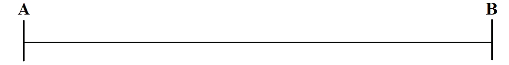
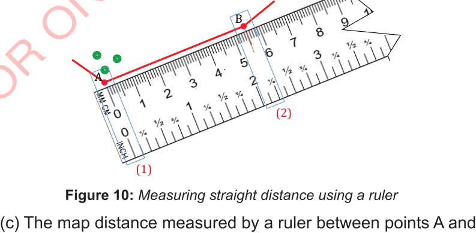

2. Using a ruler
The following steps are involved in determining distance on a map using a ruler:
(a) Create a straight line connecting two points, for example, points A and point B as shown in Figure 9.

Figure 9: A straight line connecting point A and point B
(b) Lay a ruler along a straight line AB, align the zero mark on a ruler with point A (1), and mark on ruler where point B is located as shown by red mark (2) in Figure 10.

Figure 10: Measuring straight distance using a ruler
(c) The map distance measured by a ruler between points A and